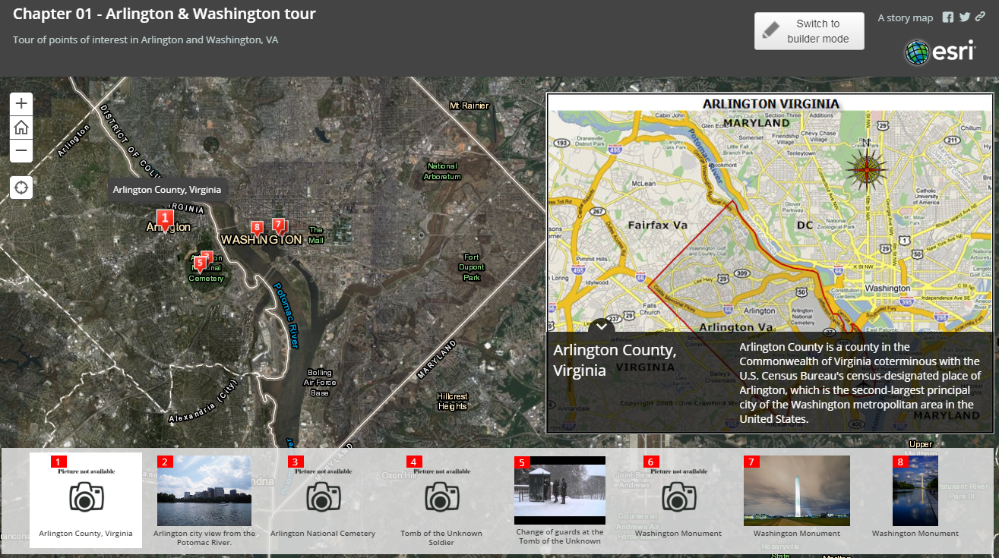
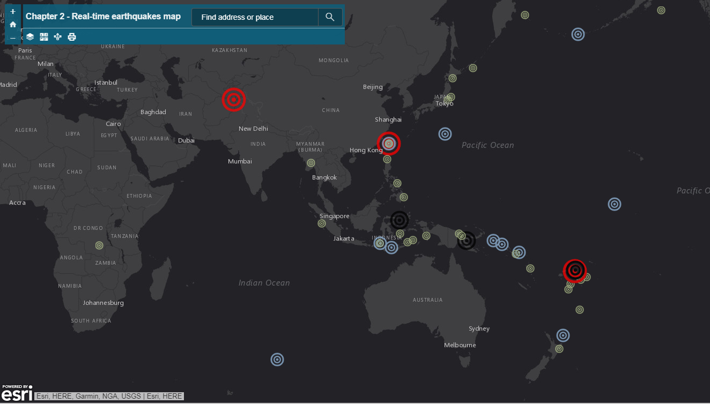
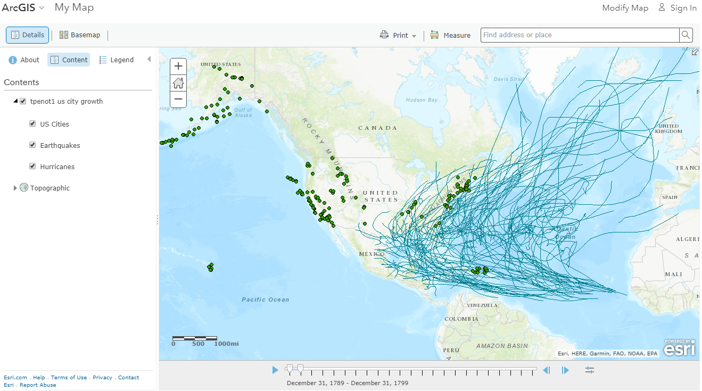

 Book Assignment 01: Story Map of Arlington Virginia An ArcGIS Online Story Map Tour that shows points of interest in Arlington, Virginia.
 Book Assignment 02: Real-time earthquakes map An ArcGIS Web App showing real-time earthquakes worldwide with a magnitude of 4.5 or greater that have occured in the last 7 days. This dataset is streamed from the USGS.
Book Assignment 03a: Weather damage report map This is an ArcGIS Web App with an additional feature that allows people to add "volunteered geographic information" to the map.
 Book Assignment 05: EBRP swamps and block group populations map An animated map showing EBRP swamps and block group populations for the area.